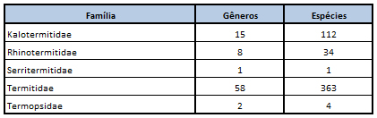
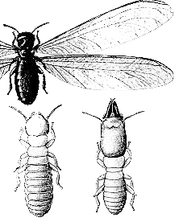
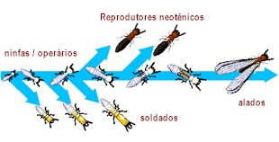

CUPIM DE MADEIRA SECA
A Periplaneta americana também denominada de barata grande, barata voadora, barata-de-esgoto, é uma das espécies domésticas mais comuns no Brasil.
Os cupins de madeira seca são cupins que vivem em madeira com relativamente baixo teor de umidade. Eles não necessitam, assim, contato com o solo ou com outra fonte de umidade. A própria madeira e o ambiente em que vivem provêem a umidade que necessitam para sobreviver. Por viverem dentro da madeira seca, eles são frequentemente transportados de um local a outro em móveis infestados, caixas ou containers de madeira, estrados de madeira, molduras de quadros, etc.
Classificação
O Cryptotermes brevis, chamado popularmente de cupim de madeira seca, é um cupim que encontra-se normalmente restrito à peça atacada, não tendo capacidade de passar de uma madeira infestada para outra a não ser que efetivamente exista um ponto de contato entre ambas as madeiras. Neste caso, a colônia pode se estender e infestar todo o madeirame em contato.
O tamanho da colônia é proporcional ao tamanho da peça atacada, uma vez que encontra-se restrito a ela. Por este motivo, os cupins de madeira seca normalmente apresentam colônias pequenas, com cerca de 300 indivíduos a alguns milhares. Uma colônia de cupim de madeira seca pode chegar a ter 3000 indivíduos após 15 anos.
O pequeno tamanho da colônia é, entretanto, compensado pelo grande número de colônias que podem ser encontradas em uma determinada estrutura, podendo haver centenas de colônias convivendo no mesmo ambiente. Por estarem protegidos de predadores durante a revoada (que podem ocorrer dentro da própria estrutura), não dependerem de contato com o solo e sobreviverem em madeiras com pouca umidade, muitos alados podem sobreviver por ocasião da revoada e formar novas colônias.
O seu ataque encontra-se em expansão no Brasil, onde acredita-se tenha sido introduzido através de importação de estruturas de madeira infestadas. Provavelmente originado da Jamaica, este cupim vêm espalhando-se, através de navios, para o resto do mundo.
O Cryptotermes brevis é típico de construções humanas, ou seja, dificilmente são encontrados em árvores ou mesmo em madeiras abandonadas no exterior de construções humanas. De fato, até agora, nunca foram encontrados nos locais e ambientes citados acima, caracterizando um comportamento estritamente antropófilo.
Estes cupins são sensíveis à umidade e, portanto, à perda de água. Esta sensibilidade é tamanha que suas fezes são formadas por pelotas fecais secas, comprimidas durante o processo de excreção, a fim de não perder água no processo de eliminação de impurezas orgânicas. Estas fezes ficam armazenadas por um tempo em uma câmara no ninho e podem ser usadas para fechar canais que eventualmente não estejam mais sendo utilizados ou para fins de defesa.
Periodicamente, por causa do acúmulo de fezes, os cupins as eliminam sob a forma de uma chuva típica. As fezes se acumulam, assim, logo abaixo do orifício de eliminação, ao longo da peça atacada. Este é o mais típico sinal de infestação por cupins de madeira seca. Após a eliminação das fezes, o orifício formado (de formato circular com diâmetro de cerca de 1-2 mm) é então novamente fechado.
As fezes apresentam um formato de pequenos grânulos (0,5 mm de comprimento) , ovalados e, quando observados com lupa, é possível observar 6 reentrâncias causadas pela impressão dos músculos retais nas paredes das fezes.
Os orifícios de eliminação são posteriormente fechados com uma membrana fina de material lenhoso, que é periodicamente aberta para novas eliminações. Assim eles não perdem água ou tampouco permitem a passagem de invasores.
O soldado deste cupim apresenta uma cabeça dura e volumosa (do tipo fragmótica cilindróide e truncada na frente), de cor castanho avermelhada, escura a quase negra, que contrasta com o colorido esbranquiçado do resto do corpo. A cabeça é utilizada para obstrução dos canais, quando é necessário defender o ninho.
Suas revoadas são geralmente noturnas (início da noite), sendo que, pelo fato de terem poucos indivíduos, são revoadas pequenas e discretas, contendo por vezes algumas dezenas de indivíduos. Os alados saem por orifícios feitos pelas ninfas, que podem ser os mesmos feitos para eliminação das pelotas fecais.
Os casais formados após a revoada instalam-se diretamente na madeira, através de furos de prego, encaixe de peças, frestas, etc. Nas colônias maduras, a rainha é apenas ligeiramente maior que o rei.
A colônia dos cupins de madeira seca não apresentam operários verdadeiros. As ninfas de último estágio desempenham este papel na colônia. No processo de construção do ninho, as ninfas normalmente seguem os veios da madeira, construindo câmaras e galerias conectadas canais de comunicação estreitos, que podem ser fechados no caso de ataque de inimigos ou outras razões. As paredes das galerias e túneis são aveludadas, como revestidas por uma fina camada de poeira. É possível encontrar-se pelotas fecais distribuídos nas galerias e câmaras, até que sejam eliminados. No entanto, nunca encontra-se solo dentro das galerias.
Danos
Por estarem restritos à peça atacada e por terem um comportamento avesso à luz, os cupins de madeira seca apresentam sinais externos de ataque bastante discretos.
No entanto, não se deve subestimar os danos potenciais causados por este cupim, pois quando se percebe efetivamente o dano, o prejuízo já é grande. De fato, em madeiras submetidas a infestações por um tempo prolongado, restará apenas uma fina superfície externa intacta, quebradiça e outras poucas divisórias internas, separando câmaras espaçosas. É assim que muitas vigas de sustentação de telhados de residência ficam quase que totalmente ocas e sucumbem, ocasionando o desabamento do telhado.
Como cupins são espécies sensíveis, dificilmente infestam peças de madeira que apresentem movimento constante, uma vez que este movimento pode esmagá-los antes de conseguirem abrigo através de uma fresta. Assim objetos como cadeiras, portas e janelas normalmente não são atacadas pelo mesmo.
Quando infestam peças que são móveis, o ataque é discreto, podendo formar colônias completas no interior da peça, mesmo as de menor tamanho. Esta capacidade de habitar peças facilmente transportáveis, sem apresentar sinais externos de ataque, favorece sua dispersão quando as peças são transportadas a diferentes regiões geográficas.
Dentre as peças mais comumente atacadas pelo cupim de madeira seca, destacamos o batente de portas e janelas (que ficam fixo, sem movimento, em contato com a parede), móveis e armários embutidos, rodapés e forros de madeira.
Estantes com livros que não são movimentados podem ser objeto do ataque destes cupins, sendo que um dos procedimentos aconselhados para a manutenção de acervos culturais, é a sua constante movimentação e limpeza, a fim de evitar o estabelecimento de colônias nestas peças.
CUPINS
Os cupins são insetos sociais pertencentes à Ordem Isoptera, palavra que deriva do grego isos, que significa igual e ptera, que significa asas, ou seja os cupins pertencem à classe de insetos de asas semelhantes.
Estes insetos tem distribuição mundial, ocorrendo em áreas tropicais e temperadas na terra. Cerca de 2.200 espécies de cupins já foram descritas, sendo que no continente americano encontramos aproximadamente 540 espécies distribuídas em 84 gêneros e 5 famílias. Nos Estados Unidos foram relatadas cerca de 40 espécies e, no Brasil, cerca de 200 espécies, a maioria benéfica. O quadro abaixo representa esta distribuição:

Além destes cupins, podemos citar o Reticulitermes lucifugus (Rossi, 1792), o Heterotermes spp, Nasutitermes spp, etc. que também invadem estruturas.
VIDA SOCIAL
Cupins são insetos sociais, ou seja, como as abelhas, formigas e vespas, formam uma colônia. Esta colônia de indivíduos é caracterizada pela especialização de funções, existindo indivíduos responsáveis por tarefas específicas tais como: buscar alimento, reprodução, botar ovos, defender o ninho, dentre outras. A especialização faz os indivíduos de uma colônia possuírem diferentes formas (morfologia diferenciada, polimorfismo), devidamente adaptadas à função que irão desempenhar. Desta maneira, um indivíduo especializado desempenha apenas um tipo de tarefa, fazendo com que exista uma completa interdependência entre os indivíduos de diferentes funções para a sobrevivência da colônia.
Existem basicamente três tipos de funções ou castas de indivíduos em uma colônia:
Conforme a figura abaixo, na parte superior está o alado, pronto para a revoada. Ele é também chamado de siriri ou aleluia. É o cupim adulto, que tem o aparelho reprodutor já desenvolvido. Na parte inferior, à esquerda, um cupim operário e à direita um soldado. O soldado é caracterizado pela cabeça avantajada para sustentar uma mandíbula grande o suficiente para a função de defesa:

A casta dos operários é caracterizada por indivíduos responsáveis por todas as funções rotineiras da colônia, tais como obtenção de alimento, alimentação de indivíduos de outras castas, inclusive o rei e a rainha, construção e conservação do ninho (reparação por danos e limpeza), eliminação de indivíduos adoecidos ou mortos, cuidados com os ovos. Morfologicamente falando, os operários apresentam uma cor branco leitosa com a cabeça relativamente mais escura, não apresentando nenhum olho (tanto olhos compostos quanto olhos simples ou ocelos). Algumas espécies podem apresentar uma área pigmentada onde os olhos seriam tipicamente encontrados; no entanto todos os operários são cegos. As asas são ausentes pois não necessitam das mesmas para o desempenho das funções a eles atribuídas.
A casta dos soldados, por sua vez, tem a função de guarda do ninho e proteção dos operários durante a busca de alimentos. Morfologicamente apresentam corpo de cor branco leitosa, e são caracterizados pelas cabeças escuras desenvolvidas com um par de mandíbulas também desenvolvidas (a única exceção são os soldados da espécie Nasutitermes spp, que apresentam mandíbulas na forma de um prolongamento espinhoso da cabeça). Semelhantemente aos operários, os soldados também não apresentam asas ou olhos (áreas pigmentadas na cabeça podem estar presentes na região onde os olhos estariam localizados). Como estruturas de defesa, além da potente mandíbula que pode esmagar, cortar ou golpear com enorme força e da cabeça dura e volumosa que pode obstruir passagens estreitas do ninho contra a penetração de inimigos naturais, os soldados de algumas espécies podem apresentar secreções de natureza tóxica ou viscosa e muito grudenta, através de uma estrutura na cabeça denominada fontanela (um tipo de poro que se interliga com a glândula frontal, responsável pela produção das secreções). É interessante mencionar que o formato da cabeça e das mandíbulas pode ajudar na identificação da espécie infestante.
A casta dos reprodutores alados é representativa dos indivíduos responsáveis pela reprodução. Assim, esta casta é formada por indivíduos sexualmente definidos (machos e fêmeas), com o aparelho reprodutor desenvolvido. São os famosos siriris, siri-siris ou aleluias, que saem do ninho em um vôo de dispersão com o objetivo único de encontrar um local onde possam se reproduzir, formando outro ninho de cupins. Este fênomeno de dispersão é conhecido como revoada ou enxamagem e ocorre principalmente em épocas quentes e úmidas, normalmente no período da tarde, próximo ao anoitecer. Morfologicamente falando, para desempenharem a função de dispersão, apresentam dois pares de asas membranosas, úteis apenas durante o fênomeno de dispersão, caracterizadas por terem dimensões semelhantes (o que os classifica na Ordem Isoptera, como mencionamos anteriormente). Quando não estão em uso, as asas repousam sobre o abdome do inseto. A cor das asas pode variar de claras e transparentes a escuras, sendo que é através das nervuras presentes nas asas que se identificam muitas espécies de cupins. A coloração do corpo dos alados varia de um marrom claro ao preto, dependendo da espécie. Apresentam olhos compostos e algumas espécies também apresentam olhos simples ou ocelos. Da mesma forma que os soldados, apresentam fontanela na cabeça.
Após a revoada, quando pousam no solo para procurar um abrigo e formar novo ninho, os reprodutores alados forçam as asas contra a superfície e a quebram, pois já desempenharam o seu papel no vôo de dispersão. A parte basal da asa, que permanece junto ao corpo após a quebra das asas, é denominada escama alar. Se o casal não tiver se encontrado durante o vôo de dispersão, a fêmea, já no solo, libera um feromonio sexual que irá atrair o macho. Após ambos se encontrarem, partem para procurar um local seguro para o acasalamento. Após a identificação do abrigo (madeira seca ou solo, dependendo da espécie ser um cupim de madeira seca ou cupim subterrâneo) macho e fêmea se acasalam e iniciam a nova colônia dando início à postura de ovos. A partir daí são chamados de rei e rainha, ou casal real, da nova colônia.
Quando inicia a postura, o abdome da rainha sofre uma hipertrofia, pois todos os ovos em desenvolvimento ficam em seu interior, aumentando de tamanho a medida que a fêmea aumenta sua capacidade de oviposição com o passar dos meses. O abdome da fêmea pode, assim, alcançar vários centímetros de comprimento, apresentando uma coloração branco leitosa. O macho permanece junto à fêmea, que necessita ser fecundada periodicamente e, por sua vez, apresenta uma leve hipertrofia em seu abdome. Dependendo da espécie de cupim, o casal real pode transitar livremente no ninho ou permanece confinado em uma câmara real, de onde jamais sairá.
O ninho pode ser formado ainda por outros indivíduos ou elementos, tais como ovos e indivíduos imaturos, brancos, moles e dependentes dos operários que cuidam de sua limpeza e alimentação. Também podem apresentar reprodutores secundários ou reprodutores de substituição, indivíduos com a função de substituir o casal real no caso de algum deles adoecer ou morrer, ou até mesmo ter a função de complementar a postura de ovos na colônia. Reprodutores secundários são produzidos em colônias mais maduras e, como não têm a necessidade de sair da colônia, eles nunca desenvolveram asas podendo apresentar, no entanto, gemas alares quando são originados de ninfas. Sua coloração pode variar de leve a fortemente pigmentada.
Outras espécies de artrópodes também podem conviver com os cupins, tais como alguns pequenos besouros, miriápodes e moscas e são denominados simbiontes.
Para manter todos os indivíduos desta sociedade, o ninho desempenha um papel importante, oferecendo condições microclimáticas (temperatura, umidade, intempéries climáticas) adequadas e seguras a todos os indivíduos desta comunidade, protegendo-a contra inimigos naturais (predadores e parasitas). Ao conjunto formado pela comunidade (indivíduos) e pelo ninho (parte física), denominamos colônia. Assim, uma colônia pode ser formada de vários ninhos (ou sub-ninhos) no caso de compartilhar os mesmos indivíduos.
CICLO DE VIDA
Os cupins são insetos que apresentam metamorfose incompleta. Embora cada espécie possua características de desenvolvimento diferentes, basicamente podemos resumir o ciclo de vida destes insetos em: ovos, formas jovens (ou ninfas) e adultos. A rainha coloca ovos que se transformam nas formas jovens. As formas jovens, por sua vez, podem se diferenciar em operários, soldados e reprodutores alados que, como vimos, após se abrigarem em outro local, formam o casal real da nova colônia.

Entre a forma jovem e a forma adulta, os cupins sofrem mudas para que possam se desenvolver, a este processo chamamos de ecdise ou muda.
Os operários podem ser divididos em dois tipos: operários verdadeiros, que são estéreis e operários funcionais, que são machos e fêmeas. Operários funcionais tem a habilidade de mudar de volta a ninfa, que pode então se transformar em soldados, reprodutores alados ou reprodutores de substituição, dependendo das necessidades da colônia. O último estágio ninfal pode desempenhar funções do operário no busca de alimentos e ajudam a cuidar de outras ninfas nos estágios iniciais.
Os cupins de madeira seca não tem operários verdadeiros. Sua função é desempenhada pelas ninfas que podem se desenvolver em soldados ou reprodutores. Os cupins subterrâneos apresentam, em geral, as três fases do ciclo de vida descrito acima.
Em relação à longevidade dos cupins, o rei e a rainha podem viver até 30 anos. Durante todo o período de vida, a rainha irá colocar ovos e, para isso, necessita de acasalamento frequente do rei. A colônia como um todo, no entanto, pode viver para sempre uma vez que se o rei ou a rainha morrerem ou adoecerem, são prontamente substituídas pelos reprodutores de substituição que se encarregarão das funções de fecundação, do rei, ou de oviposição, da rainha.
FORMAÇÃO DE UMA NOVA COLÔNIA
Novas colônias podem ser formadas a partir dos reprodutores alados (siriris ou aleluias) ou pelo isolamento de indivíduos de uma colônia grande. Na colônia formada através dos alados, é interessante notar que a maior parte das formas aladas irá morrer por serem atacadas por inimigos naturais (formigas), consumidas por predadores (pássaros, morcegos, etc), por sofrerem com mudanças climáticas ou simplesmente por não encontrarem o par ou um local seguro para fazer o ninho. Além disso, o desenvolvimento inicial da colônia é lento. A rainha coloca poucos ovos inicialmente e, ao final do primeiro ano, uma colônia de cupins subterrâneos, por exemplo, pode conter cerca de 75 indivíduos apenas, apresentando-se assim, extremamente frágil.
A formação de uma nova colônia, através do isolamento, acontece quando uma colônia identifica uma nova fonte de alimento e uma sub-colônia é formada para explorar esta nova fonte alimentar. Se o caminho entre a colônia principal e a colônia secundária for quebrado, a população isolada pode então dar origem às formas reprodutoras, geradas através dos operários funcionais e ninfas, como discutimos anteriormente.
Desta maneira, outra principal fonte de formação de novas colônias, é através do acúmulo de madeira infestada em determinados locais (que contribuem para a formação de uma sub-colônia) e pelo uso de madeiras já infestadas por cupins.
Fonte: Pragas Online
Conheça o serviço de descupinização da Bioforte para proteção de móveis, estruturas e imóveis em Franca, Ribeirão Preto, Uberaba e região.